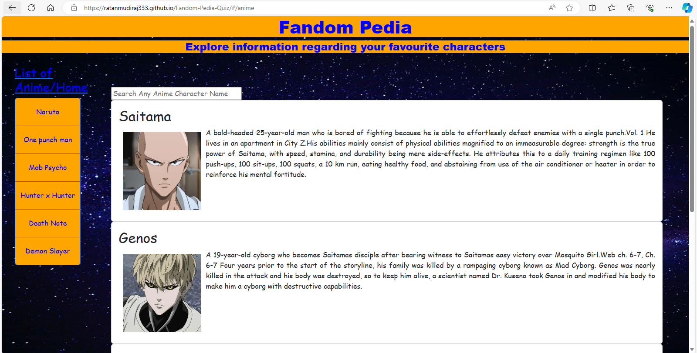
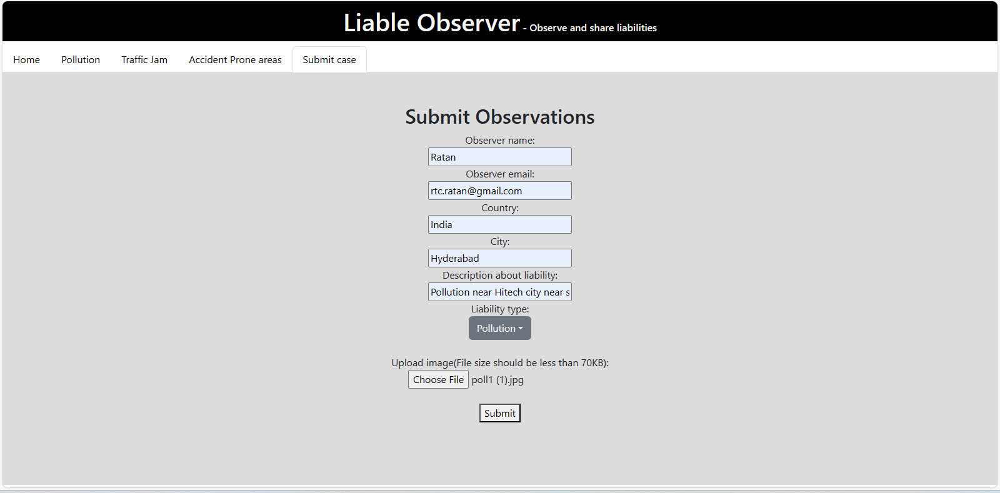

- About Me
- Ratan Mudiraj
- A Software Engineer with 3 years of experience in Oracle PeopleSoft development pursuing to migrate into web development role or any other role where I can put my skills into practice. Also, practiced and worked on personal web development projects using different web technologies, open to learn new skills and adapt as per the role. Looking for an opportunity to be a part of an organization that would provide me ample opportunity to showcase and improve my skills, decision making abilities and leadership qualities for personal and organization’s growth.
- Technical Skills:
- HTML, CSS, Bootstrap, JavaScript, jQuery, ExpressJS, Node JS & React JS
- Oracle PeopleSoft (Application Designer) & BI Publisher
- Database (Oracle SQL Developer, MongoDB & MS SQL Server)
- Python
- Knowledge of C and C++
- Contact:
- Memory Blaze
- A game developed using HTML, CSS & JavaScript (Library: jQuery). Consisting 4 levels & each level consists of 6 different coloured circles. To start the game, we must click on the start option and the coloured circles start showing a pattern, we must follow the same pattern by clicking the coloured circles. If the pattern we selected is correct then we can go to the next level else we can check the pattern again and play the level again. If all levels are cleared, we can restart the game again.
Screen shots
When incorrect pattern is given click check pattern to check the pattern again and complete the level
When correct pattern is given level is cleared and click start to begin the next level
All 4 levels are cleared the game is completed and restart option will appear to play the game again
- Ratan's Calci
- A calculator developed using HTML, CSS & JavaScript (Library: jQuery).
Screen shots
..........
..........
- Tic Tac Toe
- A game developed using HTML, CSS & JavaScript (Library: jQuery). In the landing page we must give the names of the 2 players and click on submit. Next, we are redirected to the game page. First move begins with player 1 selection and next move begins with player 2. The first player to achieve a horizontal / vertical / diagonal pattern wins the game.
Screen shots
..........
..........

- Fandom Pedia & Fandom Quiz
- Fandom Pedia is a website to search information about Movie, Anime & Tv series characters developed using HTML, CSS (Library: Bootstrap) & JavaScript (Library: React JS). Fandom Quiz is a quiz about Movie, Anime & Tv series developed using HTML, CSS (Library: Bootstrap) & JavaScript (Library: React JS).
Screen shots
Fandom Pedia
..........
..........
Fandom Quiz
..........
- Covid Stats
- A covid dashboard which displays covid statistics of different countries around the world. Based on (No. of cases, No. of deaths, No. of recovery, Citizen’s vaccination rate, Covid Phases, Cities with high rate of virus & Infected and recovered rate). Completely responsive webpage for different screen sizes. Developed using HTML, CSS (Library: Bootstrap) & JavaScript (Library: React JS).
Screen shots
..........

Mobile view
..........
- Liable Observer
- Liable Observer is a portal where citizens can check liable elements around them.Liable elements are categorized into 3 elements(Pollution, Traffic Jam & Accident prone areas) Citizens can submit new observations under submit observation tab and select the liability type, the observation will be displayed under the tab as per the type we selected & Administrator will provide update on the status of the liability and can also delete observations. Developed using MERN stack(MongoDB, ExpressJS, ReactJS & NodeJS). Backend is deployed using github & render software and frontend is deployed using github.
Screen shots
Universal Observer Access
..........
..........
Administrator Access
..........
...